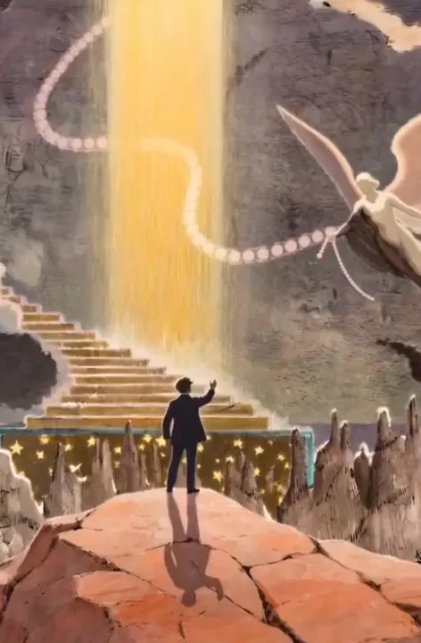
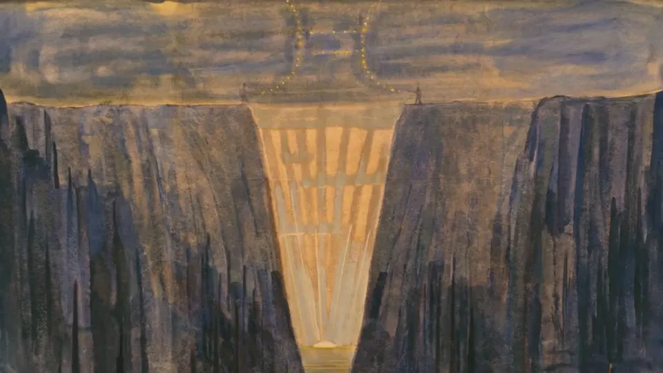
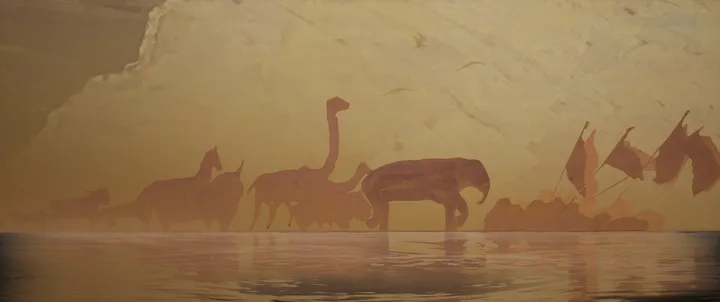
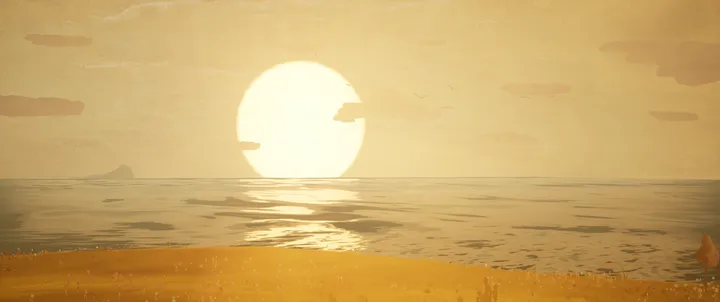
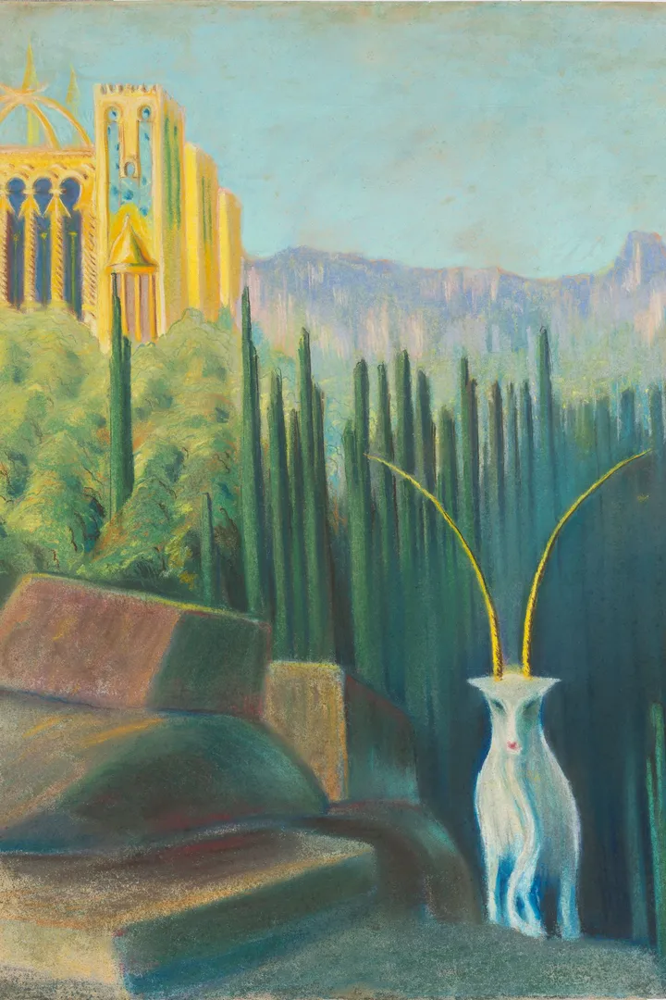
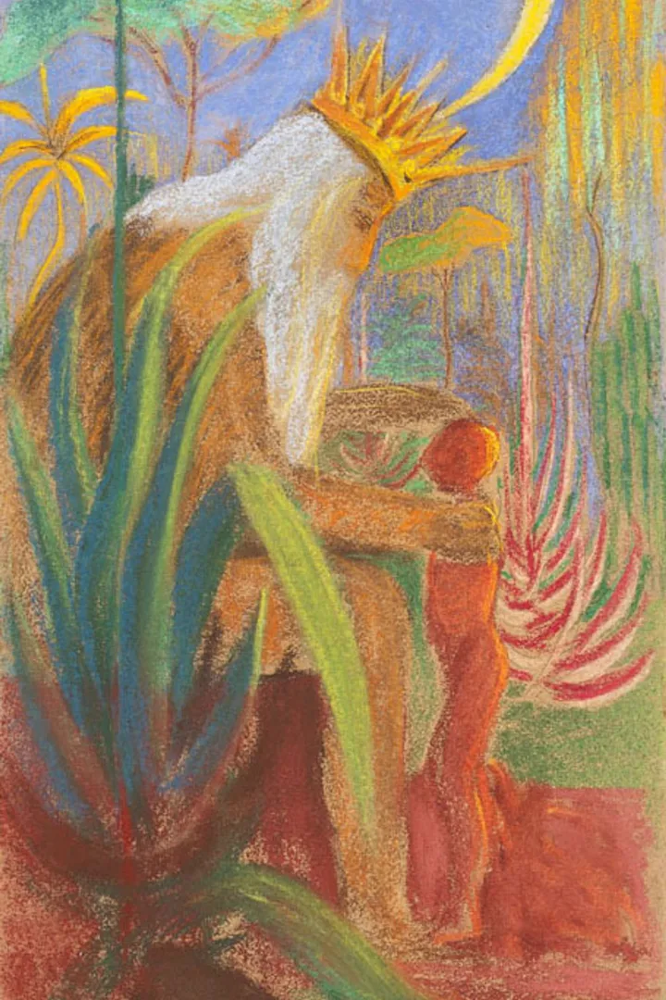

Čiurlionis Magic Mirror
See yourself in the world of Čiurlionis as the mirror turns your reflection into a moving painted figure.

Oniroco × RnA Studio · 2026
From an animated film to VR and interactive installations, we brought the painted worlds of M. K. Čiurlionis into RnA Studio in Lisbon.
The film
Dream Worlds follows Lithuanian painter and composer Mikalojus Konstantinas Čiurlionis through landscapes drawn from his Symbolist canvases. He crosses painted hills, strange forests and celestial stairways as one scene opens into the next.

Selected frames
The film keeps the painted textures in view as the artist moves through them. These frames trace the journey from open hills to a world of angels.


Immersive VR · Oniroco × RnA Studio
Trail of Angels is an immersive VR experience at RnA Studio in Lisbon, in collaboration with Oniroco. Step inside a world drawn from the paintings of M. K. Čiurlionis and explore it in VR.
RnA Studio included a preview of Trail of Angels in MOODSCAPE at NFC Summit 2026 in Lisbon.

RnA Studio · Lisbon
204 created the visuals for the film and carried the world of Čiurlionis into the studio through interactive installations and a digital gallery.

See yourself in the world of Čiurlionis as the mirror turns your reflection into a moving painted figure.
Move in front of the frame to become part of an animated composition that responds to your gestures.

Painted cliffs, forests and fields of blue flowers unfold across the main room projection at RnA Studio.
Immersive gallery · RnA Studio
Across the gallery screens, an animal parade crosses a hazy landscape and birds pass in front of a golden sun. These renders come from the exhibition’s digital frames.


Čiurlionis Magic Photo Booth
Take a portrait and see yourself inside a painted world inspired by Čiurlionis. These are two of the scenes made for the booth.
Open the Čiurlionis Photo Booth ↗
